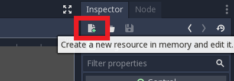

Tutorial 6 - Menu and In-Game Graphical User Interface
Selamat datang pada tutorial kelima kuliah Game Development. Pada tutorial kali ini, kamu akan mempelajari cara membuat menu screen, game over screen, dan in-game GUI. Di akhir tutorial ini, diharapkan kamu paham cara menggunakan Container, Label, Button, serta unsur-unsur lain untuk menyusun menu dalam game.
Daftar isi
- Tutorial 6 - Menu and In-Game Graphical User Interface
- Daftar Isi
- Pengantar
- Creating a Main Menu Screen
- Creating a Life Counter
- Creating a Game Over Screen
- Bonus To Do
- Instruksi Pengerjaan
- Skema Penilaian
- Pengumpulan
- Referensi
Pengantar
IMPORTANT: Untuk tutorial kali ini, diperbolehkan menggunakan template game yang telah disediakan ATAU melanjutkan dari yang sudah dikerjakan di tutorial 4 kemarin. Jika ingin melanjutkan proyek kemarin, cukup mengcopy isi folder T4 kamu ke dalam folder T6 sebelum mulai.
Let The Games Begin
Saat kamu pertama kali memulai suatu game, apa yang pertama kali muncul? Logo perusahaan pembuat game tersebut? Logo Bushimo? Tentunya semua game ada yang namanya main-menu. Main Menu adalah layar utama saat kita memulai bermain game. Biasanya terdapat tombol untuk memulai permainan pada menu utama ini. Selain menu utama, di dalam game juga dapat menampilkan informasi yang terkait dengan kondisi permainan sekarang. Itu yang dinamakan game GUI (Graphical User Interface). GUI dapat menampilkan banyak hal, misal sisa nyawa pemain, total jumlah uang pemain, dan lain-lain. Kemudian yang tidak kalah penting adalah tampilan saat pemain kalah atau gagal, yakni game over screen.
Pada tutorial sebelumnya kita sudah berhasil membuat game platformer 2D yang cukup dasar. Namun saat menjalankan project, scene yang dijalankan langsung level 1. Tidak ada menu yang muncul terlebih dahulu.
Menu Screens, Game Over Screens, Game GUI
Berikut adalah contoh Menu Screen, Game Over Screen, dan GUI pada beberapa game populer:


Pada tutorial ini kita akan melakukan hal berikut:
- Membuat Main Menu Screen
- Membuat Life Counter
- Membuat Game Over Screen
Creating a Main Menu Screen
Visualization
Untuk menghasilkan sebuah UI yang baik, sebaiknya kita membuat sebuah mockup terlebih dahulu. Apa saja yang ingin kita tampilkan di menu utama, dan posisi segala hal yang ingin kita tampilkan. Visualisasi boleh digambar di kertas, dan tidak harus bagus-bagus. Cukup untuk memberikan gambaran kasar apa yang ingin kita buat. Berikut adalah contoh visualisasi main menu:

Containers, Labels, and Buttons
Salah satu cara untuk menyusun sebuah menu dengan rapi adalah menggunakan containers. Beberapa container yang terdapat di Godot Engine antara lain:
- MarginContainer untuk menyusun elemen dengan padding
- HBoxContainer untuk menyusun elemen secara horizontal
- VBoxContainer untuk menyusun elemen secara vertikal
- CenterContainer untuk menyusun elemen secara centered
Sesuai dengan visualisasi yang telah dilakukan di atas, kita dapat menyusun main menu ini dengan susunan container sebagai berikut:
Kotak terbesar seukuran game window, dan terdapat padding di bagian ujung window. Oleh karena itu kita menggunakan parent MarginContainer. Kemudian layar dibagi dua kiri kanan, maka menggunakan HBoxContainer. Di bagian kiri ada judul dan button, maka ada VBoxContainer. Button sendiri akan kita susun dengan VBoxContainer juga. Sedangkan sebelah kanan cukup kita berikan CenterContainer untuk gambar.

Note: Kamu tidak harus mengikuti struktur dan layout persis sama seperti di atas. Bahkan diperbolehkan jika kamu tidak ingin menggunakan container sama sekali untuk menu utama. Namun container sangat membantu untuk visualisasi dan kerapihan.
Mulai dengan membuat scene baru. Karena root node UI yang kita inginkan adalah container paling luar, atur root node menjadi sebuah MarginContainer. Jangan lupa save scene tersebut, berikan nama MainMenu.tscn.

Pada tab Inspector, atur Custom Constants sebagai berikut:

Kemudian pada Viewport, tekan menu Layout dan pilih opsi Full Rect. Ini dilakukan agar ukuran container menyesuai ukuran window.
Sekarang kita masukkan elemen text dan gambar ke dalam MarginContainer. Untuk text menggunakan node Label, dan untuk gambar dapat menggunakan node TextureRect. Untuk contoh ini ada dua tombol, "New Game" dan "Stage Select", yang akan diimplementasikan menggunakan node LinkButton.
Untuk menambahkan text pada Label atau LinkButton cukup menulis di tab Inspector bagian Text.
Untuk menambahkan gambar kepada TextureRect, sama seperti menambahkan texture di Sprite yaitu di tab Inspector bagian Texture.
Saat selesai, mungkin struktur scene dan workspace kamu akan terlihat seperti ini.
You may have noticed: Tulisan pada Label dan LinkButton kecil sekali, dan di tab Inspector tidak ada pilihan ukuran atau jenis font. Ini dikarenakan pada Godot Engine tidak ada fitur untuk mengubah ukuran dan jenis font secara langsung. So what do we do?
Creating Custom Fonts
Pada Godot Game Engine, untuk mengatur font dan ukuran sebuah tulisan dalam sebuah node, misal node Label, kita harus menggunakan objek custom font. Untuk tutorial ini, kita akan membuat DynamicFont menggunakan font dengan ekstensi .ttf. Sudah disediakan beberapa file .ttf di folder Assets/Fonts/Raw (jika ingin mencari font sendiri dipersilakan, bisa melalui website font gratis seperti di sini.
Pertama, tekan tombol create resource pada tab Inspector. Kemudian buat sebuah DynamicFont.

Masih pada tab Inspector, cari pilihan Font Data, lalu tekan load dan cari file .ttf yang ingin digunakan. Setelah itu, kamu dapat mengatur size sesuka hati pada opsi Size. Tekan save, dan simpan sebagai file .tres di folder Assets/Fonts. Selamat! Anda telah berhasil membuat sebuah DynamicFont.

Untuk menggunakan font tersebut, cari opsi Custom Font di tab Inspector pada node Label atau LinkButton, lalu load resource yang baru saja dibuat. IMPORTANT: Seperti yang telah dijelaskan sebelumnya, tidak ada cara mengatur ukuran dan jenis font secara langsung, jadi jika ingin membuat font dengan tipe atau ukuran yang berbeda, harus membuat DynamicFont yang berbeda.
Setelah menggunakan DynamicFont pada judul dan tombol kita, hasilnya terlihat seperti ini (tombol new game dan stage select diberi warna merah menggunakan Custom Colors pada tab Inspector):

Masih belum terlihat rapi. Sekarang kita tambahkan container sesuai visualisasi di atas tadi. Struktur node dan workspace anda harusnya menjadi lebih rapi:
Agar judul dan button tidak terlalu berhimpitan, ubah Margin pada VBoxContainer parent. Kemudian, ubah Alignment , pilih opsi Expand pada vertical di Size Flags, lalu atur Separation pada Custom Constants.

Selamat! Menu Screen kamu sudah terlihat cukup rapi!
Tapi masih belum clickable tentunya. Bagaimana caranya agar saat kita menekan tombol "New Game" dia akan melempar kita ke level 1?
Clickable Menu
Kita ingin agar saat tombol "New Game" ditekan, game akan menjalankan scene level pertama. Kemarin kita sudah belajar menggunakan Signals. Sekarang kita akan menggunakan Signal lagi yaitu pressed().
Gunakan cuplikan script berikut pada script LinkButton
1 2 3 4 5 6 | |
Kemudian isi variabel scene_to_load pada tab Inspector dengan value "Level 1"

Berhasil! Sekarang tombol "New Game" kamu akan langsung membawa pemain ke level 1

"Mengapa saat saya tekan play (F5) yang jalan pertama bukan main menu?" Karena MainMenu.tscn belum di-set sebagai Main Scene. Main Scene dapat diubah di Project Settings -> Application -> Run -> Main Scene.

Creating a Life Counter
Kemarin kita sudah membuat kondisi dimana saat player jatuh, scene akan di reload dengan player kembali ke tempat semula. Namun tidak ada penalti sama sekali untuk jatuh. Sekarang kita akan mencoba membuat kondisi dimana setiap kali player jatuh, akan kehilangan satu nyawa. Saat sudah tidak ada nyawa lagi, maka terjadi GAME OVER.
Global Variables
Jika kamu pernah menyentuh bahasa pemrograman apapun (obviously), pasti sudah familiar dengan yang namanya Global Variable. Global Variable adalah sebuah variabel yang terlihat (visible) oleh seluruh program. Kita menggunakan Global Variable untuk mendefinisikan nyawa player, yang akan persist walaupun scene baru dipanggil atau diulang-ulang. Variabel ini dapat dipanggil dari script manapun.
Pertama, klik kanan folder Scripts lalu tekan New Script...
Beri nama script tersebut global.gd lalu isi dengan script berikut:
1 2 3 | |
Pada Project Settings, cari tab Autoload, lalu tambahkan script global.gd (tekan icon folder di sebelah tulisan Node Name lalu cari scriptnya). Setelah ditambahkan, akan muncul di list. Pastikan kolom Singleton dalam kondisi enabled.
Sekarang kita punya variable nyawa yang dapat diakses kapan saja. Mari kita tampilkan menggunakan label.
Side note buat yang bertanya mengapa menggunakan global variable untuk contoh ini, alasannya karena tiap kali reload scene, player juga ikut reload. Maka
livesdisimpan dalam global agar tidak reset saat scene reload.
Adding the GUI
Buat sebuah scene baru dan beri nama Life Counter.tscn dengan root node sebuah MarginContainer. Buat sebuah child node Label, lalu berikan script. Jangan lupa berikan custom font kepada node Label.
1 2 3 4 | |
Struktur akan terlihat seperti ini (MarginContainer di rename menjadi "GUI"):

Pada Level 1.tscn, tambahkan sebuah CanvasLayer node sebagai child node dari node utama. CanvasLayer merupakan node yang membuat sebuah layer 2D tersendiri untuk seluruh child nya. CanvasLayer berguna untuk membuat background untuk level, atau user interface seperti yang akan kita buat sekarang.
Tambahkan Life Counter.tscn yang tadi kita buat sebagai child node dari CanvasLayer. Struktur Level 1.tscn anda akan terlihat seperti ini:

Coba jalankan Level 1.tscn kamu. Sekarang sudah muncul tampilan life counter di kiri atas yang mengikuti bentuk window yang ada.

Namun nyawa player belum berkurang saat mati. Waktunya melakukan sedikit scripting!
Ubah script di Area Trigger.gd dengan kode berikut:
1 2 3 4 5 6 7 8 9 10 11 12 13 | |
What's happening above? Karena transisi dari level 1 ke 2 menggunakan function yang sama, pertama kita periksa terlebih dahulu scene yang memanggil fungsi apakah sama dengan target scene (maka reload). Jika iya, nyawa berkurang satu. Baris
passdi kondisiglobal.lives== 0 akan kita isi sebentar lagi (you could probably already guess what goes there though).

Sekarang nyawa player berkurang saat mati. Namun kita belum memasukkan kondisi dimana nyawa player 0, yaitu GAME OVER.
Creating a Game Over Screen
Using Background Coloring
Untuk membuat Game Over screen, step by step nya sama dengan membuat Main Menu. Visualisasi game over saya adalah tulisan game over dengan warna latar merah. Jika ingin menambahkan warna latar, kita dapat menggunakan node ColorRect.
Buatlah sebuah scene baru, beri nama Game Over.tscn, lalu set sebuah ColorRect sebagai root node. Mirip seperti MarginContainer tadi, agar kotak mengikuti ukuran window, pada Viewport tekan menu Layout dan pilih Full Rect. Ubah warna sesuka hati.

Tambahkan label bertuliskan "GAME OVER", dengan DynamicFont yang menurut kamu cocok, kemudian atur posisinya. Selesailah Game Over screen kita!

Sekarang bagaimana caranya agar saat nyawa pemain 0 akan menampilkan layar ini? Pada Area Trigger.gd ubah script pass menjadi:
1 | |
Berhasil! Sekarang saat player nyawanya habis, GAME OVER screen akan muncul.

Selamat, tutorial ini sudah selesai!
Bonus To Do
Apabila masih ada waktu atau ingin lanjut berlatih mandiri, silakan baca referensi yang tersedia untuk belajar mengimplementasikan fitur tambahan. Tidak ada kriteria khusus untuk ini, kamu bebas menambahkan apapun yang kamu suka. Beberapa contoh yang bisa dikerjakan:
- Button pada Game Over Screen untuk kembali ke Main Menu
- Fitur Select Stage (yang konon sudah ada button-nya di main menu namun tidak dihiraukan)
- Transition screen antara stage 1 dan stage 2
- dll. Get creative!
Jika mengerjakan fitur tambahan, buat file baru bernama T6_[NPM].md dimana
[NPM] adalah NPM kamu (misal: t6_1506757913) di folder yang sama dengan
README.md ini. Tulis teks menggunakan format Markdown.
Instruksi Pengerjaan
- Dalam repositori pribadi kamu, silakan sinkronisasi branch
masterdengan repositori upstream. Instruksi lebih lanjut bisa dibaca disini. - Jika terdapat conflict, mohon diselesaikan secara damai. Jika tidak yakin bagaimana caranya, silakan ambil mata kuliah Advanced Programming atau baca ini.
- Setelah semua selesai, buat branch baru dari branch
masterdengan namatutorial-xdimanaxadalah nomor tutorial (misal: tutorial-6). - Ganti current branch menjadi
tutorial-xtersebut, silakan kerjakan tutorial di dalam branch yang bersangkutan. Setiap branch tutorial tidak perlu di merge ke branchmaster.
Skema Penilaian
Pada tutorial ini, ada empat kriteria nilai yang bisa diperoleh:
- A apabila kamu mengerjakan tutorial dan latihan melebihi dari ekspektasi tim pengajar.
- B apabila kamu hanya mengerjakan tutorial sesuai yang diminta oleh deskripsi tutorial.
- C apabila kamu mengerjakan tutorial secara minimalis atau tidak lengkap/tuntas.
- E apabila kamu tidak mengerjakan apapun atau tidak mengumpulkan.
Pengumpulan
Kumpulkan dengan memasukkan berkasnya ke dalam Git dan push ke fork materi tutorial ini di repositori milik pribadi. Jangan push atau membuat Merge Request ke repositori upstream materi tutorial kecuali jika kamu ingin kontribusi materi atau memperbaiki materi yang sudah dipublikasikan!
Tenggat waktu pengumpulan adalah Jumat, 23 Oktober 2020, pukul 21:00.
Referensi
- Main Menu
- GUI Design
- Kenney Assets
- Materi tutorial pengenalan Godot Engine, kuliah Game Development semester gasal 2020/2021 Fakultas Ilmu Komputer Universitas Indonesia.
Created: 2024-02-01 01:30:29